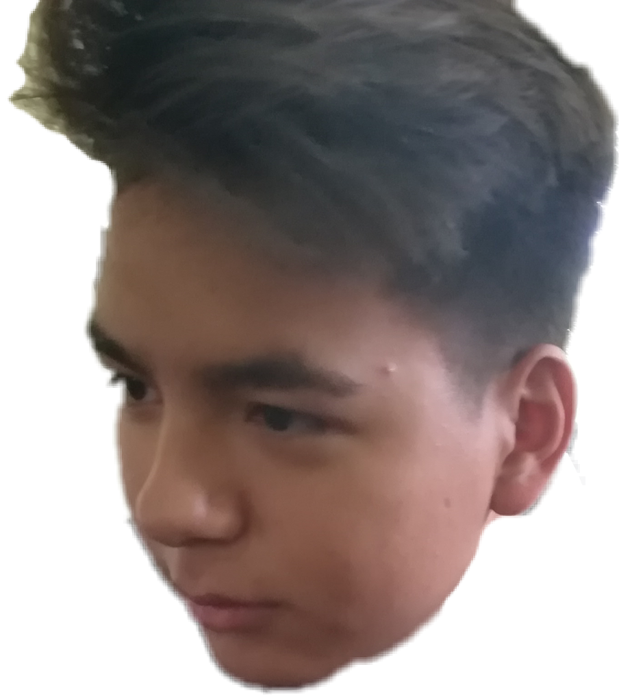

| EMOCIONES POSITIVAS |
|---|
| EMOCIÓN | DESCRIPCIÓN | |
| Felicidad | Es una emoción que se produce en un ser vivo cuando cree haber alcanzado una meta deseada. Esta suele ir aparejada a una condición interna o subjetiva de satisfacción y alegría. Algunos psicólogos han llegado a definir la felicidad como una medida de bienestar subjetivo que influye en las actitudes y el comportamiento de los individuos. | |
| Gratitud | Esta surge en un momento en el que te das cuenta que alguien hizo mucho más por ti de lo que era necesario, tal vez un vecino, un maestro o un mentor. La gratitud abre nuestros corazones y activa en nosotros el botón de la “’reciprocidad” genuina que nos mueve a hacer algo por aquella persona que nos hizo tanto bien. | |
| Serenidad | Es algo similar a la felicidad, pero en una versión mucho más relajada, sostenida y sutil. Se disfruta cuando estamos totalmente presentes y conscientes de lo que estamos viviendo, desde disfrutar al comer un antojo, hasta estar completamente inmersos en un momento de contemplación. | |
| Interés | Es un estado más elevado donde algo nuevo llama nuestra atención inspirándonos y provocándonos fascinación y curiosidad. A veces se despliega como un abanico de nuevos retos que te permite mantener en crecimiento tus habilidades; esto nos mantiene despiertos, vigorizados y sintiéndonos realmente vivos. |  |
| Esperanza | Esta se genera cuando las circunstancias son difíciles o adversas y nos ilumina como un faro de luz, que refuerza nuestra creencia de que todo puede cambiar y mejorar. | |
| Orgullo | Es una de las emociones catalogadas como de “auto-conciencia”, y muchas veces tiene una connotación negativa al asociarlo con los pecados capitales como la soberbia. Si se mantiene balanceada con algo de humildad, su positividad está en que nos permite atribuirnos los logros que resultan de un esfuerzo genuino y de un trabajo duro. | |
| Asombro | Está se origina al reconocer la sensación de estar en presencia de algo mucho más grande que nosotros mismos. Puede darse al contemplar un atardecer, al observar la vía láctea o al sostener la cabeza de un recién nacido, esos momentos de magnificiencia y belleza recargan nuestra energía. | |
| Diversion | La diversión es el uso del tiempo de una manera planeada para el refresco terapéutico del propio cuerpo o mente. La diversión implica participación activa pero de una manera refrescante y alegre. A medida que la gente de las regiones más ricas del mundo lleva cada vez estilos de vida más sedentarios, la necesidad de la diversión se incrementa.. | |